遊びで植物を育てよう
【新しい記事】
2019/10/20
今年最後のアジサイかな？
まだ小さいつぼみがあるんですが、寒くなるのでもう色がつかないかな。
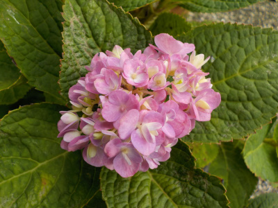
今咲いてるのはこれひとつだけです。
花が長持ちするといいな。
【アジサイTOP】 【木TOP】 【園芸TOP】
2019/09/23
アジサイの蕾が出来ました。
少し涼しくなったので、植物が元気そうです。
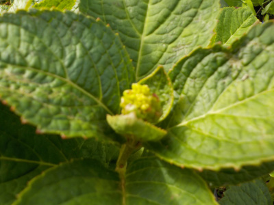
小さい蕾ができました。
どれくらいの期間で色が付くかな。
【アジサイTOP】 【木TOP】 【園芸TOP】
2019/08/25
アジサイに小さい花がつきました。
花が小さすぎて別の花みたい。
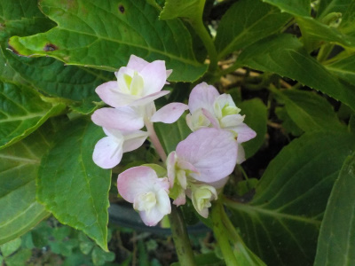
品種改良でこんなアジサイがあってもいいですね。
でも地味か。
プレゼントの花にならないから駄目ですね。
【アジサイTOP】 【木TOP】 【園芸TOP】
2019/06/16
昔ながらのアジサイが色づき出しました。
普通によくあるアジサイです。
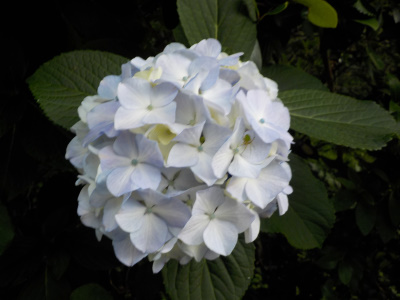
最近の凝ったアジサイよりもこっちの方が綺麗じゃないかと思いました。
好みの問題ですね。
アレコレとゴチャゴチャしたものに飽きたかな。
【アジサイTOP】 【木TOP】 【園芸TOP】
2019/06/02
霧島の恵みは今が見頃です。
もう終わりかけや、これから色付くものもありますが、全体的に今が一番色が奇麗かな。
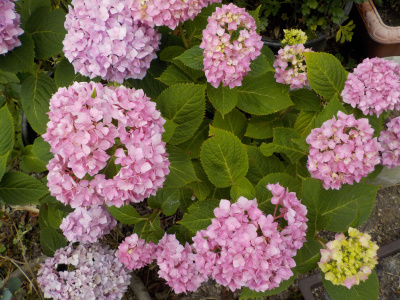
鉢に炭を入れてるのでピンクです。たぶん。
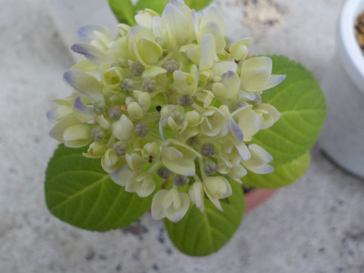
これは去年挿し木したものです。
これは青い紫陽花にしたいな。
【アジサイTOP】 【木TOP】 【園芸TOP】
2019/05/12
母の日のアジサイ
母の日はプレゼント用に紫陽花が販売しているので、家の紫陽花の成長が気になります。
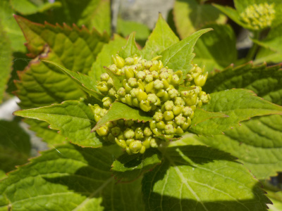
ほとんどの花がまだ小さいです。
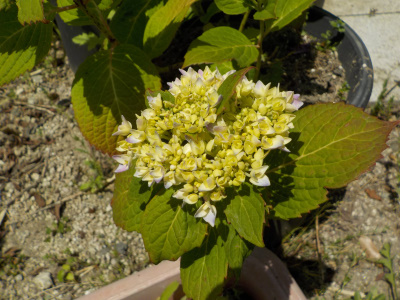
1つ色付きかけがありました。
【アジサイTOP】 【木TOP】 【園芸TOP】
2019/04/21
紫陽花に小さい花が付きました。
小さいのがいくつか出来ました。
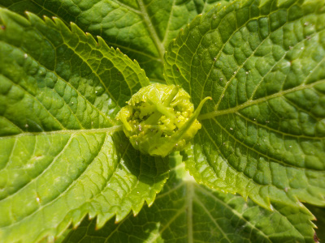
正確には花じゃないんですよね。
この感じだと一度に何個も咲きそう。
四季咲き紫陽花なので分散して咲いて欲しかったですが、まあ咲けばいいかな。
【アジサイTOP】 【木TOP】 【園芸TOP】
2019/03/09
アジサイの挿し木を鉢に植え替えました。
新しく100均でプランターを買って、綺麗に並べて置こうかと思ったんですが止めました。
今ある古いプラスチックの鉢でいいや。
お金もったいない。
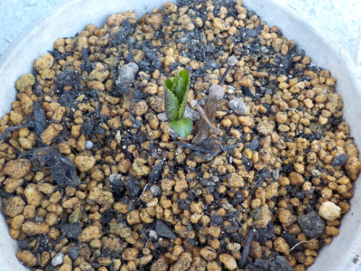
大きくなったら植え替えするとか地植えにするので、小さいサイズのうちの見た目はどうでもいいです。
無駄な買い物をしなかったので、今日はいっぱい節約できました。
【アジサイTOP】 【木TOP】 【園芸TOP】
2018/12/24
アジサイの植え替えをしました。
アジサイは1年に1回植え替えをしないと根詰まりするみたいなことを何かで読んだので、植え替えしました。
植え替えてみて思ったんですが、根でいっぱいなんてことにはなっていなかったです。
もっと木が大きくなってからの話かも。
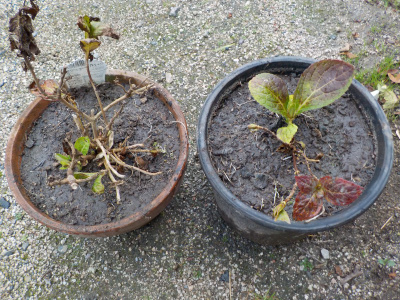
これで当分植え替えしなくてもいいかな。
【アジサイTOP】 【木TOP】 【園芸TOP】
2018/10/07
今年は四季咲きアジサイが1回しか咲きませんでした。
天候が悪かったですかねー。
普通に初夏に咲いたっきり、2度目の開花がありませんでした。
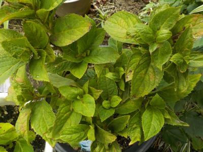
株もあんまり大きくなっていません。
四季咲きが咲かないのってなんか残念ですね。
【古い記事】
【アジサイTOP】
【木TOP】
【園芸TOP】
アジサイは水切れにとっても弱い。猛暑や酷暑を考えるとあまり植えない方がいいかもしれない。
【おいしいものを食べよう。】【たくさん寝よう。】
【ソロ活をしよう!】【季節感のあることをしよう。】【動画視聴はほどほどに。】【当サイトの全てのコンテンツは無断転載禁止です。】